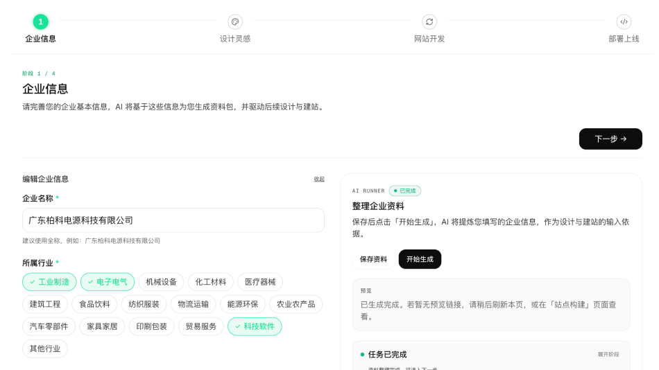
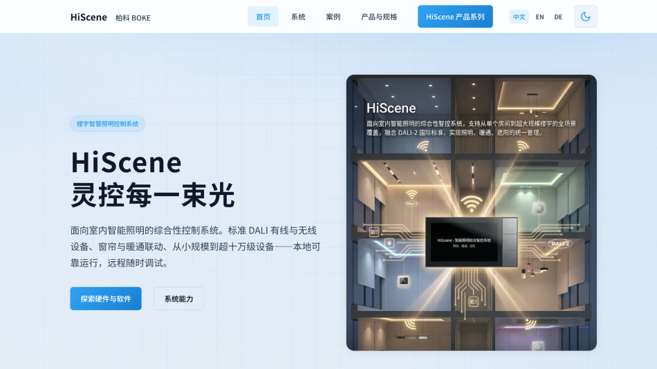
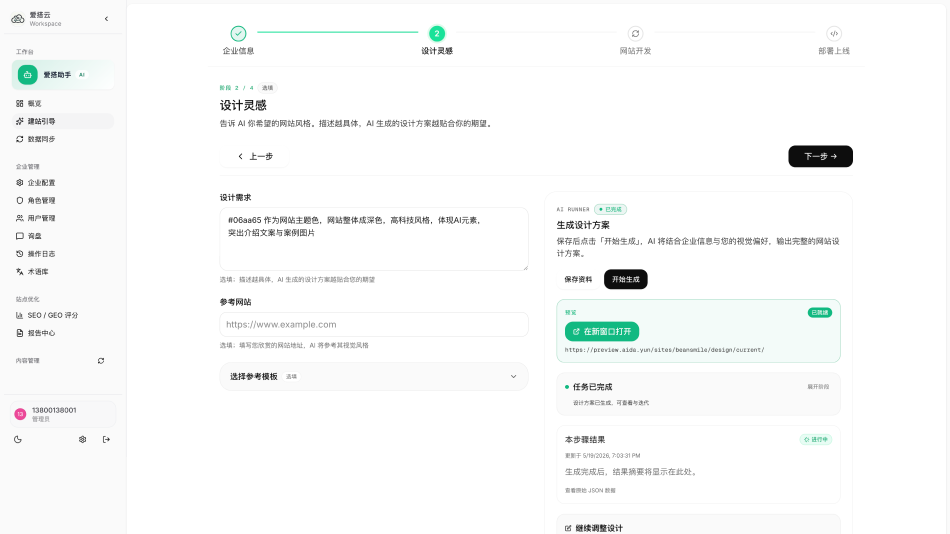
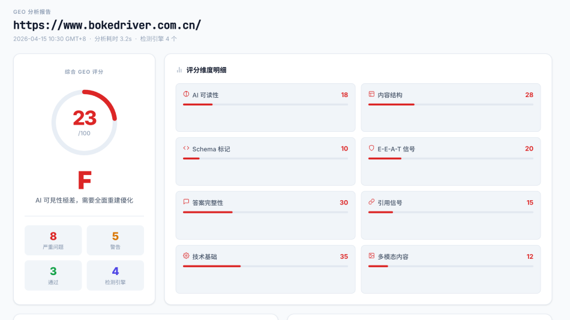
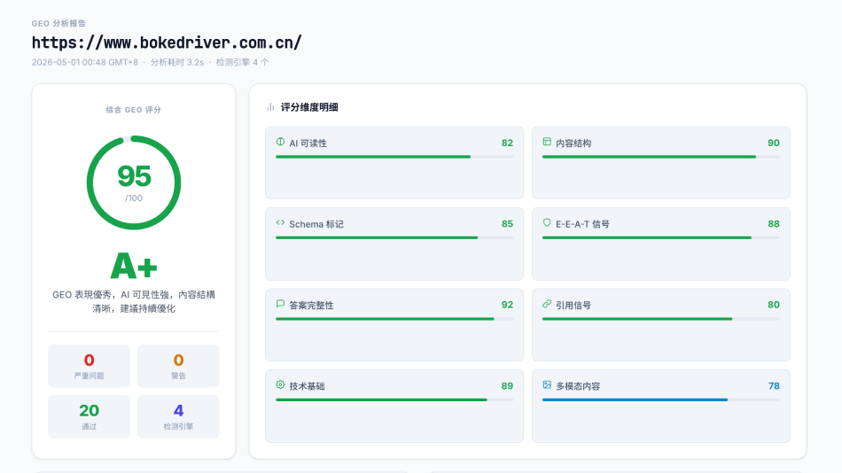

AI 时代的
品牌曝光基建
让 AI 主动推荐你
Beansmile / 乐豆信息 × 爱搭云 aida.yun。
从公司与个人，到 GEO 是什么、问题在哪，再到我们怎么帮你解决。
十三年，
一支穿越周期
的团队
从 Web 1.0 到 AI 时代 — 我们沉淀出对互联网产品的系统性认知。
13 年
技术沉淀
穿越三个时代
一支技术团队，从移动互联网，到小程序 / 企业服务，
再到 AI 时代——每一次浪潮都没有缺席。
在 11 个国家，我们交付过面向真实海外买家的官网与业务系统
20+ 年
技术老兵，
把网站做对的人
从头部品牌到上市公司，
我们用产品质量赢得复购


不是自夸，行业说了算
从微信生态比赛冠军，到 Google 官方合作伙伴 — 我们的技术能力被同行与平台双重认证。
微信开发者大赛
柏林分站 2 个分组冠军
微信官方在欧洲举办的开发者大赛 — 同场拿下两个分组冠军。
技术能力被腾讯生态在海外现场认证。
跨境微信公开课
特邀讲师
演讲主题："让海外传统 IT 系统『中国游客友好化』"。
把跨境技术经验沉淀为公开方法论。
Google
官方合作伙伴
官方认证合作伙伴 — 可对接 Google 海外推广、Search Console
与 AI Overview 集成。
我们正在做的 AI 产品，
爱搭云只是其中之一
爱搭云
B2B 出海 · GEO 营销引擎让 ChatGPT、豆包、Perplexity 在被海外客户提问时主动引用你的产品，把每一次曝光变成询盘。


Quick Image
服装电商 AI 虚拟摄影棚 — 几分钟低成本产出专业模特试穿与产品图。

Learn Craft
面向 3–9 年级学生的 AI 写作学习平台 — 实时批改 + 个性化练习 + 老师直播课。

Wordmind
多角色 AI 对话与写作辅助平台 — 学术写作、简历润色、文书优化一站覆盖。
GEO
是什么？
先讲一句话定义，再讲一个场景、一个事实、三个痛点 — 把 GEO 讲清楚。
GEO，就是
让 AI 在回答问题时，
把你列进答案里
SEO 让用户
找到你的链接
GEO 让 AI
替用户推荐你
海外客户
已经不在
Google 找你了
客户向 AI 提问：
"哪些供应商能在 Shopify 上做 AI 工具？"
AI 给出多个推荐。其中一个，是我们。
没做 GEO 改造的中国供应商，根本没出现在答案里。
未被 AI 引用 ≠ 网站不够好。
而是企业，在 AI 时代隐身。
AI 的回答里
只有 3–5 个 名字
没有第二页，没有「再加载更多」，没有「Show more」。
第六名不存在。
为什么 AI 不引用
你的官网？
不是「网站做得不够好」 — 而是 AI 进不来、看不懂，也找不到可引用片段。
AI 看不懂
官网以图片和非结构化文本为主，缺 Schema 标记和语义化 HTML。
AI 即使来了，也无法解析产品参数与企业资质。
AI 看不到
robots.txt 屏蔽了 GPTBot / PerplexityBot / ClaudeBot。
企业内容根本不会进入 AI 的知识库与引用源。
没东西可引用
没有覆盖「产品选型 / 方案对比 / 资质认证」等 AI 问答高频场景。
大量曝光机会付之东流 — 这是最致命的一类。
这不是一道
"明年再说" 的题
流量入口在迁移
全球 AI 搜索使用量正在快速增长。
年轻用户在 ChatGPT / Perplexity 上提问的比例，
已经追平甚至超过传统搜索。
答案位是零和游戏
蓝链有 10 个位置，AI 答案只有 3–5 个。
你不被引用，意味着另一家被引用。
中间没有缓冲带。
越早进入，越难被替换
AI 模型的"记忆"是滚动训练出来的。
先进入它认知的品牌，会被持续引用。
后来者要把名字「挤进去」，成本更高。
爱搭云
aida.yun
GEO 时代的
企业数字门户
不是重建一个网站。
是把官网从成本中心，重塑为主动询盘来源。
不只是重建网站
是让您的品牌，
成为 AI 搜索时代的行业标杆
关键词、外链、爬虫排名。
让 ChatGPT、豆包、Perplexity、Claude 在被海外客户提问时， 主动引用您的产品和内容。
不具备的能力
GEO 不能事后补课 — 必须从第一天就内置在网站基因里。
四件事，一次做对
AI 搜索可见度
全站内容改写为 AI 可引用的权威表述 · 资质背书在 AI 视角下显性化 · 向所有主流 AI 引擎开放索引 · 上线前完成 GEO 基线测试。
中英双语 + 目标市场当地语言
默认同步上线中文 + 英文双语 · 按目标市场叠加当地语言（德 / 法 / 西 / 意 / 阿 / 日 / 韩 等任意组合）· hreflang 内置 · AI 辅助生成专业文案 + 人工润色。
产品找得到，询盘下得来
多维度产品筛选（按协议 / 功率 / 电压 / 场景一键过滤）· 每个产品页都有清晰的询盘入口 · 移动端完整适配 · 参数表横滚、技术图可放大。
小龙虾 · 对话式内容管理
双模式 CMS — 后台传统界面操作，或直接用中文告诉 AI 要改什么，秒级完成。 团队不再因「后台太难用」而放弃更新网站。
从诊断到上线，
每一份产物都可验收
分析报告
- · 官网诊断报告 — SEO / GEO / UX 综合评分
- · 竞品分析 — 3 家同类厂商深度对比
- · 关键词研究 — 多语言核心词矩阵
- · GEO 基线测试报告 — 多平台可见度基准
设计与开发
- · AI 行业理解 + 视觉方案
- · 5 个典型页面 UI 设计
- · 完整新官网（中英 + 目标市场语言同步上线）
- · 产品筛选系统 + 询盘系统 + CMS
- · 小龙虾 AI Agent 对话式更新
- · 301 跳转 — 搜索排名平稳过渡
SEO / GEO 配置与上线后
- · 全站 AI 可读性改写
- · AI 爬虫开放配置
- · 三语 hreflang 标记
- · 30 天技术健康监控报告
- · CMS / OpenClaw 运营手册
- · 年度服务包（含 AI Token + 20 次数据更新）
一支 AI Agent 军团，
把 3 个月的人工活，并行成 4 周
已有材料
引用的新官网
填一份 企业资讯，几分钟内拿到第一版 可上线官网


把行业理解，变成可落地的视觉系统


从「AI 搜不到」到「AI 主动推荐」
用同一把尺子，量出 GEO 改造的 真实增量


4 周，从诊断到上线
下个月这个时候，您的新官网就能跑数据
竞品 / 关键词研究
设计方案交付
客户确认
数据清洗与导入
新站开发启动
前端框架搭建
三语内容生成
人工润色审核
GEO 优化配置
正式上线
GEO 测试报告
运营手册交付
内容建议
AI 引用监测
团队自主迭代
¥38,000 一次性 + ¥5,000 年度服务，全部包含，没有隐藏项
¥5,000 / 年
- · 云服务器托管
- · SSL 证书续期
- · 系统安全更新
- · OpenClaw AI Token
- · 20 次产品数据更新
两种建站，两种结果
- 2–3 个月交付 — 漫长的开发周期
- GEO 是事后补课 — 上线后再优化
- 修改需找开发 — 每次调整都要付费
- 多语言站另外报价 — 多语言需额外付费
- 交付后无更新 — 无后续支持
- 4 周交付 — 快速上线，抢占先机
- GEO 从第一天内置 — 让 AI 主动推荐你
- OpenClaw 对话式更新 — 说一句话改好
- 多语言同步交付 — 默认中英 + 目标市场当地语言
- 持续 AI 内容生成 — 网站越来越"聪明"
让 AI 主动推荐
您的品牌
搜索流量正在重新分配。今天行动，六个月后
建立的不只是流量，而是难以追赶的壁垒。